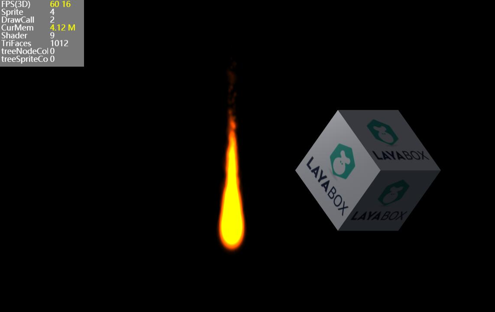

基于Laya引擎实现的粒子效果

粒子实现的基本思路，将所有粒子看作是在一个大网格中，将网格数据，比如顶点数据、索引数据，一次上传到数据缓冲中，这样只需一次drawcall即可，非常节省性能。（因为所有粒子用的纹理和着色器都是相同的，所以只需draw一次，而不用每个粒子都draw一次）。
Laya. PrimitiveMesh类是所有网格类的基类，所以自定义网格类需要继承自此类。
recreateResource() 重写此方法, 用于将网格数据提交到数据缓冲区。
_render() 重写渲染方法，将绘制类型改成独立三角形Laya. WebGLContext. TRIANGLES。
class ParticleMesh extends Laya.PrimitiveMesh { ... constructor(config) { super(); ... this.activeResource(); this._positions = this._getPositions(); this._generateBoundingObject(); } recreateResource() { let t = this; var oldCapacity: number = t.capacity; var newCapacity: number = Math.min(t.mMaxCapacity, t.capacity + t._particleAmount); this._numberVertices = newCapacity * 4; this._numberIndices = newCapacity * 6; var baseVertexData: VertexData = new VertexData(4); baseVertexData.setTexCoords(0, 0.0, 0.0); baseVertexData.setTexCoords(1, 1.0, 0.0); baseVertexData.setTexCoords(2, 0.0, 1.0); baseVertexData.setTexCoords(3, 1.0, 1.0); // t.mTexture.adjustVertexData(baseVertexData, 0, 4); for (let j = 0; j < baseVertexData.rawData.length; j++) { if (baseVertexData.rawData[j] == undefined) { baseVertexData.rawData[j] = 0; } } for (var i: number = oldCapacity; i < newCapacity; ++i) { var numVertices: number = i * 4; var numIndices: number = i * 6; t.mParticles[i] = t.createParticle(); t.mVertexData.append(baseVertexData); t.mIndices[numIndices] = numVertices; t.mIndices[Math.floor(numIndices + 1)] = numVertices + 1; t.mIndices[Math.floor(numIndices + 2)] = numVertices + 2; t.mIndices[Math.floor(numIndices + 3)] = numVertices + 3; t.mIndices[Math.floor(numIndices + 4)] = numVertices + 2; t.mIndices[Math.floor(numIndices + 5)] = numVertices + 1; } var vertexDeclaration = VertexPositionColorTexture.vertexDeclaration; var vertices = new Float32Array(t.mVertexData.rawData); var indices = new Uint16Array(this.mIndices); this._vertexBuffer = new Laya.VertexBuffer3D(vertexDeclaration, this._numberVertices,/*laya.webgl.WebGLContext.STATIC_DRAW*/0x88E4, true); this._indexBuffer = new Laya.IndexBuffer3D(/*laya.d3.graphics.IndexBuffer3D.INDEXTYPE_USHORT*/"ushort", this._numberIndices,/*laya.webgl.WebGLContext.STATIC_DRAW*/0x88E4, true); this._vertexBuffer.setData(vertices); this._indexBuffer.setData(indices); this.memorySize = (this._vertexBuffer._byteLength + this._indexBuffer._byteLength) * 2; this.completeCreate(); } _render(state) { Laya.WebGL.mainContext.drawElements(Laya.WebGLContext.TRIANGLES, this._numberIndices,/*laya.webgl.WebGLContext.UNSIGNED_SHORT*/0x1403, 0); Laya.Stat.drawCall++; Laya.Stat.trianglesFaces += this._numberIndices / 3; }
protected advanceParticle(aParticle: Particle, passedTime: number): void { let t = this; var particle: Particle = aParticle as Particle; var restTime: number = particle.totalTime - particle.currentTime; passedTime = restTime > passedTime ? passedTime : restTime; particle.currentTime += passedTime; if (t.mEmitterType == t.EMITTER_TYPE_RADIAL) { particle.emitRotation += particle.emitRotationDelta * passedTime; particle.emitRadius -= particle.emitRadiusDelta * passedTime; particle.x = t.mEmitterX - Math.cos(particle.emitRotation) * particle.emitRadius; particle.y = t.mEmitterY + Math.sin(particle.emitRotation) * particle.emitRadius; if (particle.emitRadius < t.mMinRadius) particle.currentTime = particle.totalTime; } else { var distanceX: number = particle.x - particle.startX; var distanceY: number = particle.y - particle.startY; var distanceScalar: number = Math.sqrt(distanceX * distanceX + distanceY * distanceY); if (distanceScalar < 0.01) distanceScalar = 0.01; var radialX: number = distanceX / distanceScalar; var radialY: number = distanceY / distanceScalar; var tangentialX: number = radialX; var tangentialY: number = radialY; radialX *= particle.radialAcceleration; radialY *= particle.radialAcceleration; var newY: number = tangentialX; tangentialX = -tangentialY * particle.tangentialAcceleration; tangentialY = newY * particle.tangentialAcceleration; particle.velocityX += passedTime * (t.mGravityX + radialX + tangentialX); particle.velocityY += passedTime * (t.mGravityY + radialY + tangentialY); particle.x += particle.velocityX * passedTime; particle.y += particle.velocityY * passedTime; } particle.scale += particle.scaleDelta * passedTime; particle.rotation += particle.rotationDelta * passedTime; particle.colorArgb.red += particle.colorArgbDelta.red * passedTime; particle.colorArgb.green += particle.colorArgbDelta.green * passedTime; particle.colorArgb.blue += particle.colorArgbDelta.blue * passedTime; particle.colorArgb.alpha += particle.colorArgbDelta.alpha * passedTime; particle.color = particle.colorArgb.toRgb(); particle.alpha = particle.colorArgb.alpha; } private updateEmissionRate(): void { this.emissionRate = this.mMaxNumParticles / this.mLifespan; }
advanceTime(passedTime: number): void { var particle: Particle = null; var j: number = 0; var particleIndex: number = 0; while (particleIndex < this.mNumParticles) { particle = this.mParticles[particleIndex] as Particle; if (particle.currentTime < particle.totalTime) { this.advanceParticle(particle, passedTime); particleIndex++; } else { if (particleIndex != this.mNumParticles - 1) { let nextParticle: Particle = this.mParticles[<number>(this.mNumParticles - 1)] as Particle; this.mParticles[<number>(this.mNumParticles - 1)] = particle; this.mParticles[particleIndex] = nextParticle; } this.mNumParticles--; if (this.mNumParticles == 0 && this.mEmissionTime == 0) { this.event("complete"); } } } // create and advance new particles if (this.mEmissionTime > 0) { var timeBetweenParticles: number = 1.0 / this.mEmissionRate; this.mFrameTime += passedTime; while (this.mFrameTime > 0) { if (this.mNumParticles < this.mMaxCapacity) { // if (this.mNumParticles == this.capacity) { // this.particleAmount = this.capacity; // } particle = this.mParticles[<number>(this.mNumParticles)] as Particle; this.initParticle(particle); // particle might be dead at birth if (particle.totalTime > 0.0) { this.advanceParticle(particle, this.mFrameTime); ++this.mNumParticles; } } this.mFrameTime -= timeBetweenParticles; } if (this.mEmissionTime != Number.MAX_VALUE) { this.mEmissionTime = Math.max(0, this.mEmissionTime - passedTime); } if (this.mNumParticles == 0 && this.mEmissionTime == 0) this.event("complete"); } var color: number; var alpha: number; var rotation: number; var x: number, y: number; var xOffset: number, yOffset: number; var vertexID: number = 0; var textureWidth: number = 32;//this.mTexture.width; var textureHeight: number = 32;//this.mTexture.height; for (var i: number = 0; i < this.mNumParticles; i++) { vertexID = i << 2; particle = this.mParticles[i] as Particle; color = particle.color; alpha = particle.alpha; rotation = particle.rotation; x = particle.x; y = particle.y; xOffset = textureWidth * particle.scale >> 1; yOffset = textureHeight * particle.scale >> 1; for (j = 0; j < 4; j++) { this.mVertexData.setColorAndAlpha(vertexID + j, color, alpha); } let vec3Pos: Laya.Vector3 = new Laya.Vector3(); if (rotation) { var cos: number = Math.cos(rotation); var sin: number = Math.sin(rotation); var cosX: number = cos * xOffset; var cosY: number = cos * yOffset; var sinX: number = sin * xOffset; var sinY: number = sin * yOffset; this.convertScreenCoordToOrthographicCoord(new Laya.Vector3(x - cosX + sinY, y - sinX - cosY), vec3Pos); this.mVertexData.setPosition(vertexID, vec3Pos.x, vec3Pos.y); this.convertScreenCoordToOrthographicCoord(new Laya.Vector3(x + cosX + sinY, y + sinX - cosY), vec3Pos); this.mVertexData.setPosition(vertexID + 1, vec3Pos.x, vec3Pos.y); this.convertScreenCoordToOrthographicCoord(new Laya.Vector3(x - cosX - sinY, y - sinX + cosY), vec3Pos); this.mVertexData.setPosition(vertexID + 2, vec3Pos.x, vec3Pos.y); this.convertScreenCoordToOrthographicCoord(new Laya.Vector3(x + cosX - sinY, y + sinX + cosY), vec3Pos); this.mVertexData.setPosition(vertexID + 3, vec3Pos.x, vec3Pos.y); } else { this.convertScreenCoordToOrthographicCoord(new Laya.Vector3(x - xOffset, y - yOffset), vec3Pos); this.mVertexData.setPosition(vertexID, vec3Pos.x, vec3Pos.y); this.convertScreenCoordToOrthographicCoord(new Laya.Vector3(x + xOffset, y - yOffset), vec3Pos); this.mVertexData.setPosition(vertexID + 1, vec3Pos.x, vec3Pos.y); this.convertScreenCoordToOrthographicCoord(new Laya.Vector3(x - xOffset, y + yOffset), vec3Pos); this.mVertexData.setPosition(vertexID + 2, vec3Pos.x, vec3Pos.y); this.convertScreenCoordToOrthographicCoord(new Laya.Vector3(x + xOffset, y + yOffset), vec3Pos); this.mVertexData.setPosition(vertexID + 3, vec3Pos.x, vec3Pos.y); } } if (this.mNumParticles != 0 || this.mEmissionTime != 0) { this.releaseResource(); this.activeResource(); } }
protected initParticle(aParticle: Particle): void { let t = this; var particle: Particle = aParticle as Particle; // for performance reasons, the random variances are calculated inline instead // of calling a function var lifespan: number = t.mLifespan + t.mLifespanVariance * (Math.random() * 2.0 - 1.0); if (lifespan <= 0.0) return; particle.currentTime = 0.0; particle.totalTime = lifespan > 0.0 ? lifespan : 0.0; if (lifespan <= 0.0) return; particle.x = t.mEmitterX + t.mEmitterXVariance * (Math.random() * 2.0 - 1.0); particle.y = t.mEmitterY + t.mEmitterYVariance * (Math.random() * 2.0 - 1.0); particle.startX = t.mEmitterX; particle.startY = t.mEmitterY; var angle: number = t.mEmitAngle + t.mEmitAngleVariance * (Math.random() * 2.0 - 1.0); var speed: number = t.mSpeed + t.mSpeedVariance * (Math.random() * 2.0 - 1.0); particle.velocityX = speed * Math.cos(angle); particle.velocityY = speed * Math.sin(angle); var startRadius: number = t.mMaxRadius + t.mMaxRadiusVariance * (Math.random() * 2.0 - 1.0); var endRadius: number = t.mMinRadius + t.mMinRadiusVariance * (Math.random() * 2.0 - 1.0); particle.emitRadius = startRadius; particle.emitRadiusDelta = (endRadius - startRadius) / lifespan; particle.emitRotation = t.mEmitAngle + t.mEmitAngleVariance * (Math.random() * 2.0 - 1.0); particle.emitRotationDelta = t.mRotatePerSecond + t.mRotatePerSecondVariance * (Math.random() * 2.0 - 1.0); particle.radialAcceleration = t.mRadialAcceleration + t.mRadialAccelerationVariance * (Math.random() * 2.0 - 1.0); particle.tangentialAcceleration = t.mTangentialAcceleration + t.mTangentialAccelerationVariance * (Math.random() * 2.0 - 1.0); var startSize: number = t.mStartSize + t.mStartSizeVariance * (Math.random() * 2.0 - 1.0); var endSize: number = t.mEndSize + t.mEndSizeVariance * (Math.random() * 2.0 - 1.0); if (startSize < 0.1) startSize = 0.1; if (endSize < 0.1) endSize = 0.1; particle.scale = startSize / 32;//t.texture.width; particle.scaleDelta = ((endSize - startSize) / lifespan) / 32;//t.texture.width; // colors var startColor: ColorArgb = particle.colorArgb; var colorDelta: ColorArgb = particle.colorArgbDelta; startColor.red = t.mStartColor.red; startColor.green = t.mStartColor.green; startColor.blue = t.mStartColor.blue; startColor.alpha = t.mStartColor.alpha; if (t.mStartColorVariance.red != 0) startColor.red += t.mStartColorVariance.red * (Math.random() * 2.0 - 1.0); if (t.mStartColorVariance.green != 0) startColor.green += t.mStartColorVariance.green * (Math.random() * 2.0 - 1.0); if (t.mStartColorVariance.blue != 0) startColor.blue += t.mStartColorVariance.blue * (Math.random() * 2.0 - 1.0); if (t.mStartColorVariance.alpha != 0) startColor.alpha += t.mStartColorVariance.alpha * (Math.random() * 2.0 - 1.0); var endColorRed: number = t.mEndColor.red; var endColorGreen: number = t.mEndColor.green; var endColorBlue: number = t.mEndColor.blue; var endColorAlpha: number = t.mEndColor.alpha; if (t.mEndColorVariance.red != 0) endColorRed += t.mEndColorVariance.red * (Math.random() * 2.0 - 1.0); if (t.mEndColorVariance.green != 0) endColorGreen += t.mEndColorVariance.green * (Math.random() * 2.0 - 1.0); if (t.mEndColorVariance.blue != 0) endColorBlue += t.mEndColorVariance.blue * (Math.random() * 2.0 - 1.0); if (t.mEndColorVariance.alpha != 0) endColorAlpha += t.mEndColorVariance.alpha * (Math.random() * 2.0 - 1.0); colorDelta.red = (endColorRed - startColor.red) / lifespan; colorDelta.green = (endColorGreen - startColor.green) / lifespan; colorDelta.blue = (endColorBlue - startColor.blue) / lifespan; colorDelta.alpha = (endColorAlpha - startColor.alpha) / lifespan; // rotation var startRotation: number = t.mStartRotation + t.mStartRotationVariance * (Math.random() * 2.0 - 1.0); var endRotation: number = t.mEndRotation + t.mEndRotationVariance * (Math.random() * 2.0 - 1.0); particle.rotation = startRotation; particle.rotationDelta = (endRotation - startRotation) / lifespan; }
private parseConfig(config): void { let t = this; var attr = config.childNodes[0].childNodes; var i = 0; var j = 0; for (i = 0; i < attr.length; i++) { if (attr[i].nodeName == "texture") { for (j = 0; j < attr[i].attributes.length; j++) { if (attr[i].attributes[j].nodeName == "name") { // this._battleData.num = attr[i].attributes[j].nodeValue; } } } else if (attr[i].nodeName == "sourcePositionVariance") { for (j = 0; j < attr[i].attributes.length; j++) { if (attr[i].attributes[j].nodeName == "x") { t.mEmitterXVariance = parseFloat(attr[i].attributes[j].nodeValue); } else if (attr[i].attributes[j].nodeName == "y") { t.mEmitterYVariance = parseFloat(attr[i].attributes[j].nodeValue); } } } else if (attr[i].nodeName == "gravity") { for (j = 0; j < attr[i].attributes.length; j++) { if (attr[i].attributes[j].nodeName == "x") { t.mGravityX = parseFloat(attr[i].attributes[j].nodeValue); } else if (attr[i].attributes[j].nodeName == "y") { t.mGravityY = parseFloat(attr[i].attributes[j].nodeValue); } } } else if (attr[i].nodeName == "emitterType") { for (j = 0; j < attr[i].attributes.length; j++) { if (attr[i].attributes[j].nodeName == "value") { t.mEmitterType = getIntValue(attr[i].attributes[j].nodeValue); } } } else if (attr[i].nodeName == "maxParticles") { for (j = 0; j < attr[i].attributes.length; j++) { if (attr[i].attributes[j].nodeName == "value") { t.mMaxNumParticles = getIntValue(attr[i].attributes[j].nodeValue); } } } else if (attr[i].nodeName == "particleLifeSpan") { for (j = 0; j < attr[i].attributes.length; j++) { if (attr[i].attributes[j].nodeName == "value") { t.mLifespan = Math.max(0.01, getFloatValue(attr[i].attributes[j].nodeValue)); } } } else if (attr[i].nodeName == "particleLifespanVariance") { for (j = 0; j < attr[i].attributes.length; j++) { if (attr[i].attributes[j].nodeName == "value") { t.mLifespanVariance = getFloatValue(attr[i].attributes[j].nodeValue); } } } else if (attr[i].nodeName == "startParticleSize") { for (j = 0; j < attr[i].attributes.length; j++) { if (attr[i].attributes[j].nodeName == "value") { t.mStartSize = getFloatValue(attr[i].attributes[j].nodeValue); } } } else if (attr[i].nodeName == "startParticleSizeVariance") { for (j = 0; j < attr[i].attributes.length; j++) { if (attr[i].attributes[j].nodeName == "value") { t.mStartSizeVariance = getFloatValue(attr[i].attributes[j].nodeValue); } } } else if (attr[i].nodeName == "finishParticleSize") { for (j = 0; j < attr[i].attributes.length; j++) { if (attr[i].attributes[j].nodeName == "value") { t.mEndSize = getFloatValue(attr[i].attributes[j].nodeValue); } } } else if (attr[i].nodeName == "FinishParticleSizeVariance") { for (j = 0; j < attr[i].attributes.length; j++) { if (attr[i].attributes[j].nodeName == "value") { t.mEndSizeVariance = getFloatValue(attr[i].attributes[j].nodeValue); } } } else if (attr[i].nodeName == "angle") { for (j = 0; j < attr[i].attributes.length; j++) { if (attr[i].attributes[j].nodeName == "value") { t.mEmitAngle = this.deg2rad(getFloatValue(attr[i].attributes[j].nodeValue)); } } } else if (attr[i].nodeName == "angleVariance") { for (j = 0; j < attr[i].attributes.length; j++) { if (attr[i].attributes[j].nodeName == "value") { t.mEmitAngleVariance = this.deg2rad(getFloatValue(attr[i].attributes[j].nodeValue)); } } } else if (attr[i].nodeName == "rotationStart") { for (j = 0; j < attr[i].attributes.length; j++) { if (attr[i].attributes[j].nodeName == "value") { t.mStartRotation = this.deg2rad(getFloatValue(attr[i].attributes[j].nodeValue)); } } } else if (attr[i].nodeName == "rotationStartVariance") { for (j = 0; j < attr[i].attributes.length; j++) { if (attr[i].attributes[j].nodeName == "value") { t.mStartRotationVariance = this.deg2rad(getFloatValue(attr[i].attributes[j].nodeValue)); } } } else if (attr[i].nodeName == "rotationEnd") { for (j = 0; j < attr[i].attributes.length; j++) { if (attr[i].attributes[j].nodeName == "value") { t.mEndRotation = this.deg2rad(getFloatValue(attr[i].attributes[j].nodeValue)); } } } else if (attr[i].nodeName == "rotationEndVariance") { for (j = 0; j < attr[i].attributes.length; j++) { if (attr[i].attributes[j].nodeName == "value") { t.mEndRotationVariance = this.deg2rad(getFloatValue(attr[i].attributes[j].nodeValue)); } } } else if (attr[i].nodeName == "speed") { for (j = 0; j < attr[i].attributes.length; j++) { if (attr[i].attributes[j].nodeName == "value") { t.mSpeed = getFloatValue(attr[i].attributes[j].nodeValue); } } } else if (attr[i].nodeName == "speedVariance") { for (j = 0; j < attr[i].attributes.length; j++) { if (attr[i].attributes[j].nodeName == "value") { t.mSpeedVariance = getFloatValue(attr[i].attributes[j].nodeValue); } } } else if (attr[i].nodeName == "radialAcceleration") { for (j = 0; j < attr[i].attributes.length; j++) { if (attr[i].attributes[j].nodeName == "value") { t.mRadialAcceleration = getFloatValue(attr[i].attributes[j].nodeValue); } } } else if (attr[i].nodeName == "radialAccelVariance") { for (j = 0; j < attr[i].attributes.length; j++) { if (attr[i].attributes[j].nodeName == "value") { t.mRadialAccelerationVariance = getFloatValue(attr[i].attributes[j].nodeValue); } } } else if (attr[i].nodeName == "tangentialAcceleration") { for (j = 0; j < attr[i].attributes.length; j++) { if (attr[i].attributes[j].nodeName == "value") { t.mTangentialAcceleration = getFloatValue(attr[i].attributes[j].nodeValue); } } } else if (attr[i].nodeName == "tangentialAccelVariance") { for (j = 0; j < attr[i].attributes.length; j++) { if (attr[i].attributes[j].nodeName == "value") { t.mTangentialAccelerationVariance = getFloatValue(attr[i].attributes[j].nodeValue); } } } else if (attr[i].nodeName == "maxRadius") { for (j = 0; j < attr[i].attributes.length; j++) { if (attr[i].attributes[j].nodeName == "value") { t.mMaxRadius = getFloatValue(attr[i].attributes[j].nodeValue); } } } else if (attr[i].nodeName == "maxRadiusVariance") { for (j = 0; j < attr[i].attributes.length; j++) { if (attr[i].attributes[j].nodeName == "value") { t.mMaxRadiusVariance = getFloatValue(attr[i].attributes[j].nodeValue); } } } else if (attr[i].nodeName == "minRadius") { for (j = 0; j < attr[i].attributes.length; j++) { if (attr[i].attributes[j].nodeName == "value") { t.mMinRadius = getFloatValue(attr[i].attributes[j].nodeValue); } } } else if (attr[i].nodeName == "rotatePerSecond") { for (j = 0; j < attr[i].attributes.length; j++) { if (attr[i].attributes[j].nodeName == "value") { t.mRotatePerSecond = this.deg2rad(getFloatValue(attr[i].attributes[j].nodeValue)); } } } else if (attr[i].nodeName == "rotatePerSecondVariance") { for (j = 0; j < attr[i].attributes.length; j++) { if (attr[i].attributes[j].nodeName == "value") { t.mRotatePerSecondVariance = this.deg2rad(getFloatValue(attr[i].attributes[j].nodeValue)); } } } else if (attr[i].nodeName == "startColor") { t.mStartColor = getColor(attr[i]); } else if (attr[i].nodeName == "startColorVariance") { t.mStartColorVariance = getColor(attr[i]); } else if (attr[i].nodeName == "finishColor") { t.mEndColor = getColor(attr[i]); } else if (attr[i].nodeName == "finishColorVariance") { t.mEndColorVariance = getColor(attr[i]); } else if (attr[i].nodeName == "blendFuncSource") { for (j = 0; j < attr[i].attributes.length; j++) { if (attr[i].attributes[j].nodeName == "value") { t.mBlendFactorSource = getBlendFunc(attr[i].attributes[j].nodeValue); } } } else if (attr[i].nodeName == "blendFuncDestination") { for (j = 0; j < attr[i].attributes.length; j++) { if (attr[i].attributes[j].nodeName == "value") { t.mBlendFactorDestination = getBlendFunc(attr[i].attributes[j].nodeValue); } } } else if (attr[i].nodeName == "duration") { for (j = 0; j < attr[i].attributes.length; j++) { if (attr[i].attributes[j].nodeName == "value") { t.mDuration = getFloatValue(attr[i].attributes[j].nodeValue); } } } } t.mDuration = t.mDuration == -1 ? Number.MAX_VALUE : t.mDuration; function getIntValue(element): number { return parseInt(element); } function getFloatValue(element): number { return parseFloat(element); } function getColor(element): ColorArgb { var color: ColorArgb = new ColorArgb(); for (let j = 0; j < element.attributes.length; j++) { if (element.attributes[j].nodeName == "red") { color.red = parseFloat(element.attributes[j].nodeValue); } else if (element.attributes[j].nodeName == "green") { color.green = parseFloat(element.attributes[j].nodeValue); } else if (element.attributes[j].nodeName == "blue") { color.blue = parseFloat(element.attributes[j].nodeValue); } else if (element.attributes[j].nodeName == "alpha") { color.alpha = parseFloat(element.attributes[j].nodeValue); } } return color; } function getBlendFunc(element): number { var value: number = getIntValue(element); switch (value) { case 0: return Laya.WebGLContext.ZERO; case 1: return Laya.WebGLContext.ONE; case 0x300: return Laya.WebGLContext.SRC_COLOR; case 0x301: return Laya.WebGLContext.ONE_MINUS_SRC_COLOR; case 0x302: return Laya.WebGLContext.SRC_ALPHA; case 0x303: return Laya.WebGLContext.ONE_MINUS_SRC_ALPHA; case 0x304: return Laya.WebGLContext.DST_ALPHA; case 0x305: return Laya.WebGLContext.ONE_MINUS_DST_ALPHA; case 0x306: return Laya.WebGLContext.DST_COLOR; case 0x307: return Laya.WebGLContext.ONE_MINUS_DST_COLOR; default: throw new Error("unsupported blending function: " + value); } } }